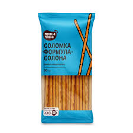

Покрокове приготування
- Активація дріжджів: У теплій воді розчиніть цукор та сухі дріжджі. Залиште на кілька хвилин, щоб з'явилася піна.
- Замішування тіста: Додайте до дріжджів розтоплене масло, сіль та поступово всипайте просіяне борошно. Замісіть еластичне тісто і залиште його в теплі приблизно на 40–60 хвилин для підйому.
- Вершкове масло або маргарин (розтоплене) — 50 г
- Формування: Розкачайте тісто у пласт завтовшки близько 4 мм і наріжте тонкими смужками або відривайте шматочки тіста та руками скачуйте їх у тонкі джгутики.
- Випікання: Викладіть майбутню соломку на деко, застелене пергаментом. Трохи змочіть палички водою (або змастіть жовтком) та посипте зверху великою сіллю. Випікайте у розігрітій до 200–220°C духовці приблизно 7–15 хвилин до гарного золотистого кольору.

Інгредієнти
- Пшеничне борошно — 200–240 г
- Тепла вода — 100 мл
- Вершкове масло або маргарин (розтоплене) — 50 г
- Сухі дріжджі — 1.5 ч. л.
- Цукор — 1 ч. л.
- Сіль — 1 ч. л. у тісто + велика сіль для посипання зверху